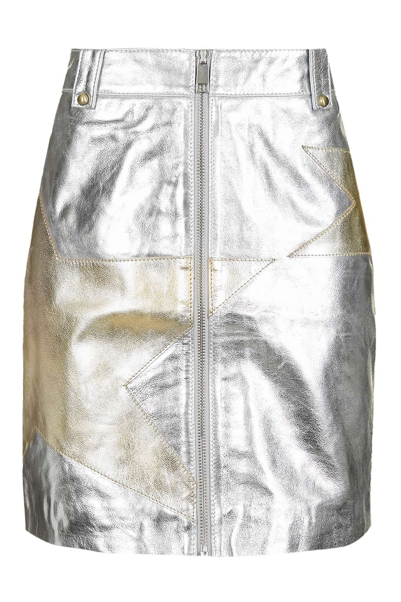

Topshop

Invest in a trophy skirt for your wardrobe with this metallic leather skirt featuring cool gold star panels at the side seams and a zip-through fastening. We are styling with a flared sleeve blouse and chic ankle boots for a go-to weekend look.
Find the trend
New Look

Wide fit (D fitting). Extra measure across insole, width and joint. Metallic finish. V throat toe design. Pointed toe. Stiletto heel. Heel height: 3.9"/10.5cm
Find the trend
H & M

Cardigan in a soft, chunky knit with a metallic print, small stand-up collar, zip down the front, side pockets and long raglan sleeves.
Find the trend